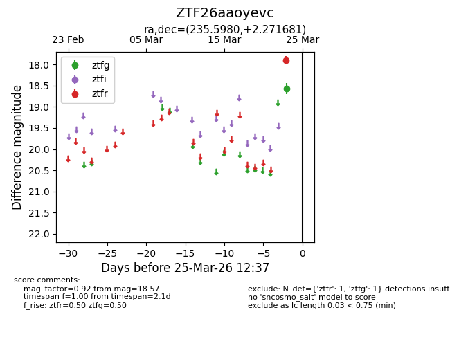
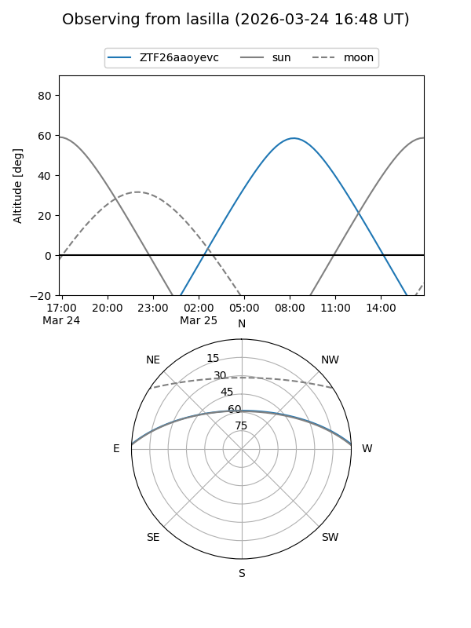
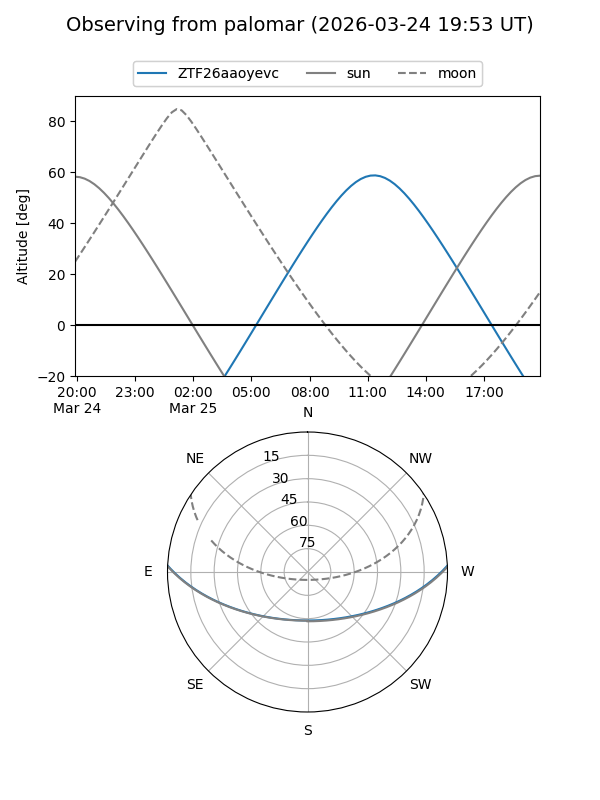

ZTF26aaoyevc
Target ZTF26aaoyevc at 2026-03-25 12:39
Aliases and brokers:
FINK: link
Lasair: link
ALeRCE: link
alt names
ZTF26aaoyevc (ztf,fink_ztf)
Coordinates:
equatorial (ra, dec) = 235.5980,+2.27168
equatorial (HMS+DMS) = 15:42:23.53,+02:16:18.05
galactic (l, b) = (9.1126,+42.16125)
Flags:
Photometry:
last ztfg=18.57, ztfr=17.90
1 ztfg, 1 ztfr detections
Lightcurve

Visibility


Additional plots